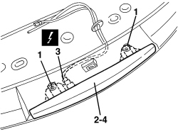
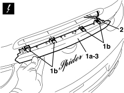

5550D16 THIRD BRAKE LIGHT - R+R
- Path
- Procedures > 55 ELECTRICAL EQUIPMENT > 5550 WARNING AND MANOEUVRING INDICATORS > 5550D BRAKE AND REVERSING LIGHTS > 5550D16 THIRD BRAKE LIGHT - R+R
- Kind
- repair procedure (removal / refitting; the operation number is the code)
- Applies to
- all engines; all production periods
- Interactive page
- https://sloeber94.github.io/elrnDB-aBrrSpdr/en/#/946002427
Applies to: all engines; all production periods
 Removing
Removing
 Refitting
RefittingOp. 7015A05 TAILGATE LOWER INTERIOR PANEL-R R
Op. 7015A06 TAILGATE UPPER INTERIOR PANEL - R.R.
Op. 7210G76 REAR SPOILER - R.R.
1. Undo the bolts.
2. Gently extract the third brake light.
3. Disconnect the electrical connection.
Description | Component |
|---|---|
ADDITIONAL REAR LIGHT (THIRD BRAKE LIGHT) |
4. Keep the third brake light.

Applies to: all engines; all production periods
Refitting
Removing- Check that the third brake light is not damaged.
- Connect the electrical connection.
- Place the third brake light in position.
- Tighten the bolts.
Op. 7210G76 REAR SPOILER - R.R.
Op. 7015A06 TAILGATE UPPER INTERIOR PANEL - R.R.
Op. 7015A05 TAILGATE LOWER INTERIOR PANEL-R R
- Check the operation of the third brake light.
Applies to: engines: 2.2 JTS, 3.2 JTS; all production periods; only with equipment: Spider
Removing
Refitting1. Carefully extract third brake light (1a) by releasing flexible retainers (1b).
Description | Component |
|---|---|
ADDITIONAL TAIL LIGHT (THIRD BRAKE LIGHT) |
3. Recover the third brake light.

Applies to: engines: 2.2 JTS, 3.2 JTS; all production periods; only with equipment: Spider
Refitting
Removing- Check that the third brake light is not damaged.
- Attach the electrical connection.
Topics linked from this page (4)
- 7015A05 TAILGATE LOWER INTERIOR PANEL-R R
- 7015A06 TAILGATE UPPER INTERIOR PANEL - R.R.
- 7210G76 REAR SPOILER - R.R.
- F040 ADDITIONAL REAR LIGHT (THIRD BRAKE LIGHT)